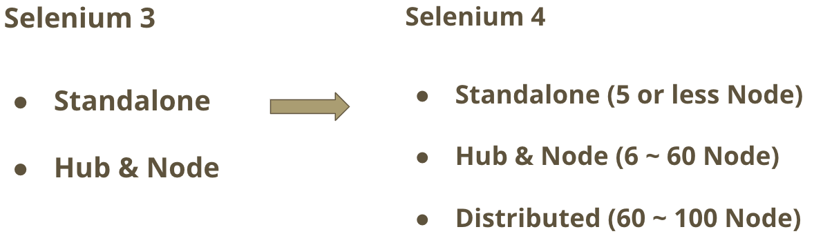
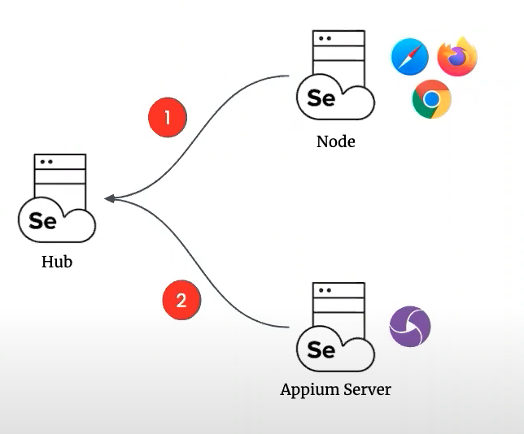
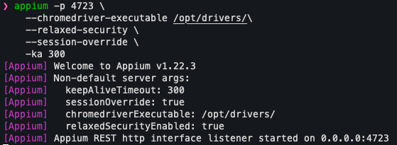

Selenium¶
What's difference between Selenium3 and Selenium4?¶
-
Selenium4adds the new mode which is calleddistributed mode. It's purpose for containerization and cloud-scalability. More details can refer to selenium official documentation -
Hub-Node mode

-
Distributed mode

How dose appium register at grid node between selenium3 and selenium4?¶
- Selenium3
-
Appium server can be registered by
--node-configserver parameter. In the node config file you have to define thebrowserName,versionandplatformand based on these parameters the gird will redirect your test to the right device. Example forappium --node-config -
Selenium4
-
Appium no longer needs to use
--node-configserver parameter to register at gird node. Instead, selenium4 adds new featureRelayallows you to proxy Appium requests to an appium server instance.
-
As mentioned before, appium no longer use
--node-config, but we have to define thenode-configforselenium-node. Thenode-configusetomlformat for config file which consists of sections and each sections has options and its respective values. -
Note: Strongly recommend watching this appium conference which explains how selenium gird work and why selenium4 has
relayfeature
Getting Started with Selenium Grid¶
-
Before starting selenium grid, you have to setup the environment. Please refer to here
-
Download the selenium server and move it to
/optdirectory -
Start
Selenium Hub -
Open the new terminal and typing the below commands
# Get ip address IP_ADDR=$( ip route get 1.2.3.4 | awk -F " " '{print $7}' ) # Start Hub java -jar /opt/selenium-server-4.4.0.jar hub\ --publish-events tcp://${IP_ADDR}:4442\ --subscribe-events tcp://${IP_ADDR}:4443\ --port 4444\ --session-request-timeout 60\ --healthcheck-interval 60\ --allow-cors true -
Note: Add parameter
--log-level FINESTto adjust the log level for helping debug
-
Start Appium
-
Open the new terminal and typing the below command
-
Note: If you want to test chrome on your device, you need to download the
chrome driverwhich must confirm the browser version of your device. After downloading the chrome driver, you need to add--chromedriver-executable ${DRIVER_PATH}while starting the appium server. -
Start
Selenium Node -
Open the new terminal and typing the below command
# Get ip address IP_ADDR=$( ip route get 1.2.3.4 | awk -F " " '{print $7}' ) # Start Node java -jar /opt/selenium-server-4.4.0.jar node\ --publish-events tcp://${IP_ADDR}:4442\ --subscribe-events tcp://${IP_ADDR}:4443\ --port 5555\ --max-sessions 8\ --config "$( pwd )/node_config.toml"- Note: If
selenium hubstart on the another machine, the${IP_ADDR}should be set hub machine ip address. And ensure the two machine network can communicate with each other
- Note: If
-
Check the each terminal after register
-
Selenium Hub

-
Selenium Node

-